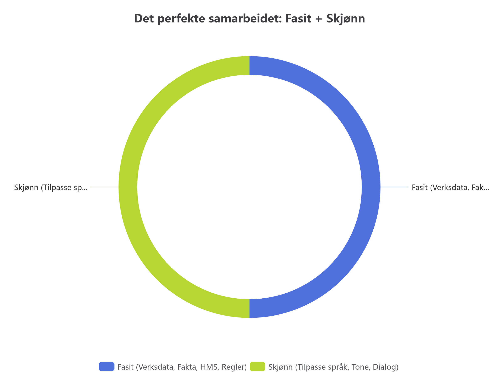

Språkmodeller elsker å virke selvsikre. Hvis du ber en standard ChatGPT om å sette opp en vaktliste for kiosken på museet, vil den levere et svar som ser kjempeproft ut.
Problemet? Den overser lett at en ansatt mangler gyldig matkurs, at noen har fri, eller at den har foreslått 4 personer når du trengte 5.

I Kunstpixel har vi strenge krav til kiosksalg: Den som står i kassa må ha godkjent allergenkurs.
count_documented_skill, som sjekker gyldighet matematisk mot dagens dato.Språkmodeller tenker i ord og sannsynligheter, ikke i tall. Hvis du ber om 5 personer, hender det ofte at den leverer 4 eller 6 fordi teksten høres bra ut.
Hvis en gjest spør: "Hva spiser Nøkken til frokost?", vil en uregulert KI kanskje dikte opp et koselig eventyr om at han spiser vannliljer.
AGENTS.md har vi en urokkelig regel: "Du skal kun uttale deg basert på verkskortet i databasen." KI-en svarer i stedet basert på Kittelsens faktiske beskrivelse: Nøkken er en skummel naturvætt fra norsk folketro.
La databasen ta seg av reglene, datoene og tellingen.
La KI-en ta seg av formidlingen, språket og varmen overfor menneskene.
← Gå til Leksjon 3 (Enkelt forklart) | Leksjon 1 (Fasit vs Skjønn)